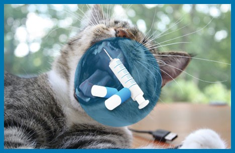

Transdermal Development & Manufacturing

We help pharmaceutical companies improve drug delivery, provide tangible clinical and compliance benefits to patients and manage product lifecycle by leveraging proprietary oral thin film and transdermal patch technologies.
Transdermal Development and Manufacturing
✔ Integrated Offering
✔ Significant Formulation Development experienced focus on drug inadhesive patches
✔ Single and multilayer patch capabilities
✔ Aqueous and Solvent Coating
✔ Pilot and Commercial-scale manufacturing and Packaging equipment
Rapidly disintegrating oral films easing drug administration without the need for water
Buccal or sublingual films improving absorption, accelerating onset of action, and reducing side effects
Local topical films for extended release of mucoadhesive drug particles in the oral cavity
Prolonged duration of action while reducing the frequency of dosing and reducing adverse effects
FAST DELIVERY ENABLES
RAPID ONSET OF ACTION
INDIVIDUAL PACKAGING
IMPROVES SAFETY
IMPROVED
BIOAVAILABILITY
CAN BE TAKEN WITHOUT WATER
UNMET MEDICAL NEEDS
Veterinary oral films provide significant market opportunities for improved drug delivery for companion animals
VS

Our services are based on a versatile drug delivery platform technology
that enables the development of
oral thin films exhibiting improved product performance.